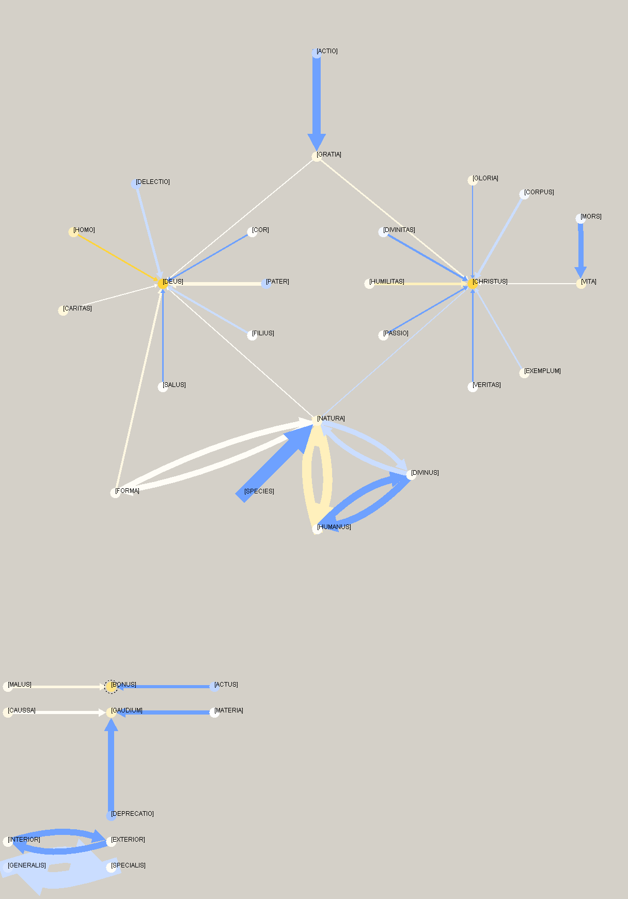

| CORPUS THOMISTICUM |
|---|
| Charta synoptica Lecturae super Epistolam B. Pauli ad Philipenses S. Thomae de Aquino |
| automato IBM DB2 Intelligent Miner exarata |
| ab E. Alarcón & J. García Hoz |
| Populatio statistica et lemmata sunt ea a Roberto Busa SJ in eius Indice Thomistico conscripta; unde, e.g., «caussa» repraesentat formas omnes verbi «causa, causae» |
|  |
Extensio operis: 18068 verba |
| MUNIFICE SUBVENIENTE |
|---|
Academic Initiative |
Pompaelone ad Universitatis Studiorum Navarrensis aedes A.D. MMXIII © 2013 Fundación Tomás de Aquino Iura omnia asservantur |